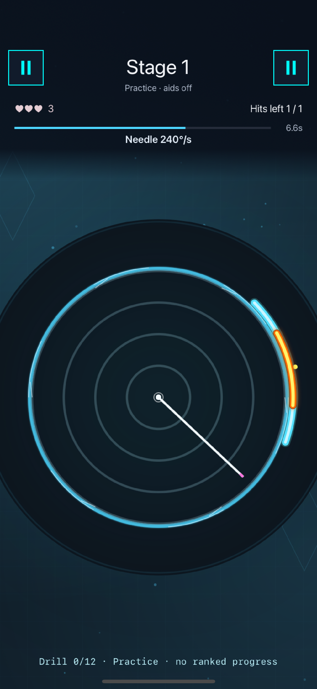
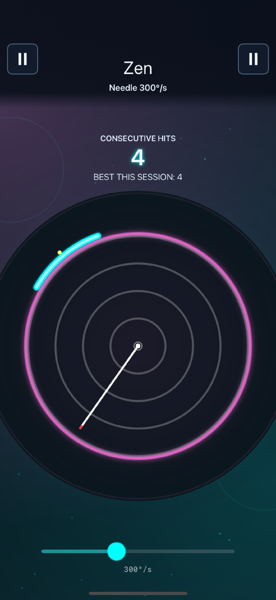

A quick beginner guide
Why a tap hits
—or misses.
Watch the needle move around the ring. Tap while it is inside the glowing arc. Aim near the center for a better hit.
Tapping faster isn't the goal. Where the needle is when you tap is what matters.
Start with one tap
Watch. Wait. Tap.
- Find the glowing arc. That's your target.
- Follow the moving needle. Let it approach the arc.
- Tap inside the target. Read the game's result before your next attempt.
Too early or too late can miss. A tap near the edge may still hit, while a tap nearer the center earns a better result.
Understand your timing
Practice tells you
what happened.
Choose a stage you've reached in Campaign and try a 12-tap drill. Read the timing feedback after each tap, then adjust the next one.
You can turn on optional guidance, slow the needle or widen the timing windows. Turn the aids off when you want to match Campaign timing.
Try this: focus on one change at a time. If the feedback says Late, try tapping a little earlier on the next pass.

Choose the pace
Zen lets you
keep going.
Use the speed slider to find a pace you can follow. Zen has no hearts or countdown.
A hit adds to your consecutive streak. A miss resets the streak, and you can keep playing. You don't need to chase the fastest setting.
Try this: hold one comfortable speed for a few taps. Watch the needle meet the arc, then change the pace when you're ready.

When you want a challenge
Take the timing with you.
Campaign has stages to work through. Flux adds changing waves and help-or-risk choices. Choose one mode first and learn what a hit looks like before trying everything.
Explore all five modes ↗Your next tap.
Neon Eye is free to download on iPhone and iPad.
Get Neon Eye on the App Store ↗Ages 13+. Contains ads and an optional one-time Remove Forced Ads purchase. Optional rewarded videos remain available, when offered.